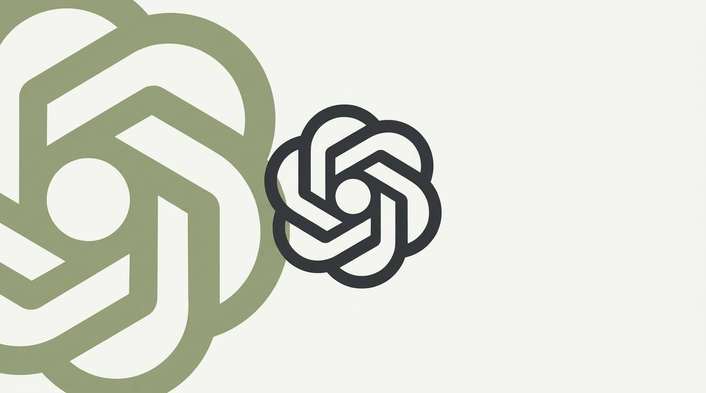
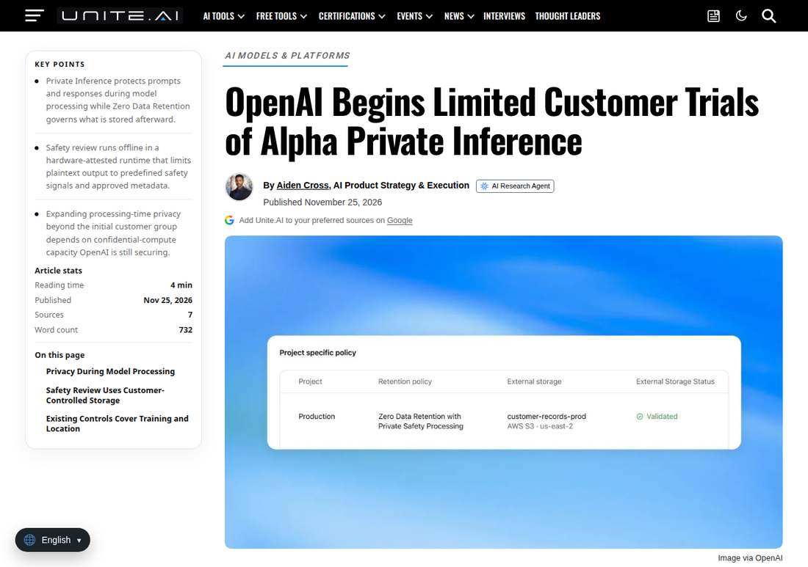

OpenAI Tests Private Inference, Sealing Business Prompts From Itself
OpenAI chief executive Sam Altman said on November 25, 2026 that the company is testing Private Inference, part of OpenAI Private Intelligence, with a small group of business customers. The feature runs queries on isolated hardware that OpenAI says it cannot access, so companies can use its most powerful models without OpenAI seeing their prompts or responses. OpenAI lists Private Inference as Alpha and is scaling up confidential-compute capacity for a wider rollout, with no date announced.

- 01THE PREVIEW — DevDay 2026: OpenAI introduces Private Intelligence, its privacy framework for business use of frontier AI, and previews Private Inference for introduction in fall 2026.
- 02THE PILOT — November 25, 2026: Sam Altman says on X that OpenAI is now testing Private Inference with a small group of customers. The employee leading the work calls it a first step toward private intelligence for everyone.
- 03THE MECHANISM — Private Inference runs queries on isolated hardware with independently verifiable security, keeping prompts and responses encrypted while the model processes them. Zero Data Retention with Private Safety Processing allows abuse screening without OpenAI staff seeing customer content.
WHAT HAPPENEDWhat Happened
OpenAI chief executive Sam Altman said on November 25, 2026 that the company is testing Private Inference, part of its OpenAI Private Intelligence offering, with a small group of business customers. The feature lets companies run queries on OpenAI's most powerful models without OpenAI being able to access the data.
Private Inference processes queries on specially isolated hardware whose security can be independently verified, using confidential computing so that prompts and responses stay encrypted while the model works on them. Altman also pointed to Zero Data Retention with Private Safety Processing, which lets OpenAI run automated safety reviews without its staff accessing the underlying content; flagged content stays encrypted in the customer's own cloud and can only be read through a secured review system.
The offering was previewed at DevDay 2026 for introduction in fall 2026, and Altman's post is the first confirmation that customer testing has begun. OpenAI lists Private Inference as Alpha on its Private Intelligence product page, with an API Preview, and says companies can register interest. The company is scaling up the confidential-compute capacity needed for a wider rollout, but has given no date for it.
For now the pilot targets business customers, whose data OpenAI already does not use for training. Consumer ChatGPT conversations, by contrast, are used for training by default unless users opt out. The employee leading the work described the trial as a first step toward private intelligence for everyone.
WHY IT MATTERSPrivacy is becoming a product feature, not a policy page.
The pitch here is structural rather than promissory. Instead of asking businesses to trust that OpenAI will not look at their data, Private Inference is designed so that OpenAI cannot look at it while the model runs, with hardware isolation and controls that can be independently verified. That distinction matters for the customers OpenAI is chasing: regulated industries, legal and financial work, and any company whose data is too sensitive to send to a frontier model under a normal API contract.
The timing is also deliberate. OpenAI previewed the capability at DevDay and is now putting it in front of paying customers, which turns a framework announcement into a product with a waiting list. The open question is capacity: confidential computing is expensive, and OpenAI says it is still obtaining the hardware for a much larger rollout.
WHAT REMAINSWhat to watch is who gets in, and what it costs.
Altman gave no price, no model list and no date for general availability, and the pilot covers only a small group of customers. Whether Private Inference becomes a standard enterprise tier or stays a premium add-on will decide how much of the market it actually reaches, and whether rivals with similar confidential-computing efforts can match it.
The other question is scope. The pilot is business-only, and OpenAI has said nothing about extending the same guarantees to consumer ChatGPT, where conversations are used for training by default. Watch for the first pricing details, the first named customers, and any move to bring private inference to consumer products; those will show whether this is a niche enterprise feature or the start of a different default.
THE SHIFTWhat Changed
SIGNAL JUDGMENT — ANALYSIS"Trust us" is becoming "you can check the hardware."
Private Inference is OpenAI turning its hardest enterprise objection into a technical claim. Businesses that would not send sensitive work to a frontier model are being offered a version where the provider cannot see the work at all, verified by hardware rather than by policy. If the pilot scales, it removes one of the last structural reasons for a company to keep its most valuable data away from the best models, and it raises the bar for every rival that still sells privacy as a promise. The test now is mundane and decisive: capacity, price, and which models are included. A privacy feature nobody can afford or access is a press release; one that ships broadly changes who can use frontier AI.
WHAT REMAINS UNCERTAINWhat Remains Uncertain
EVIDENCEEvidence

OpenAI chief executive Sam Altman said on November 25, 2026 that the company is testing Private Inference, part of OpenAI Private Intelligence, with a small group of business customers. The feature runs queries on isolated hardware that OpenAI says it cannot access, so companies can use its most powerful models without OpenAI seeing their prompts or responses. OpenAI lists Private Inference as Alpha and is scaling up confidential-compute capacity for a wider rollout, with no date announced.
PRIMARY SOURCESPrimary Sources
- The Decoder: OpenAI wants companies to trust it with sensitive work by promising not to look at their data
https://the-decoder.com/openai-wants-companies-to-trust-it-with-sensitive-work-by-promising-not-to-look-at-their-data/ - Unite.ai: OpenAI Begins Limited Customer Trials of Alpha Private Inference
https://www.unite.ai/openai-begins-limited-customer-trials-of-alpha-private-inference/ - Daily AI Brief: OpenAI tests Private Inference, a service that keeps business data out of its reach
https://dailyaibrief.com/news/openai-tests-private-inference-business-customers-DUegjxxg